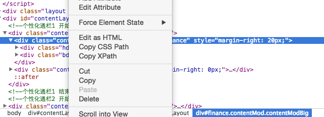
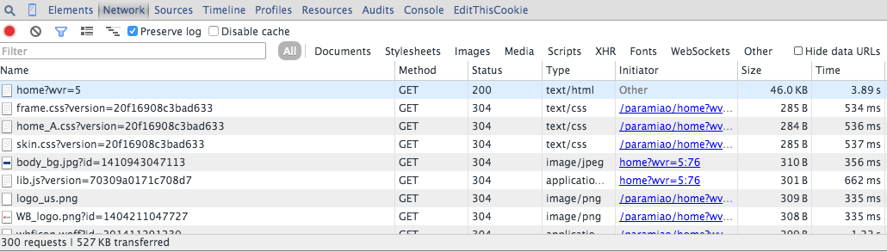

the link of articles
关于爬虫内容的分享，我会分成两篇，六个部分来分享，分别是：
我们的目的是什么
内容从何而来
了解网络请求
一些常见的限制方式
尝试解决问题的思路
效率问题的取舍
一、我们的目的是什么
一般来讲对我们而言，需要抓取的是某个网站或者某个应用的内容，提取有用的价值，内容一般分为两部分，非结构化的文本，或结构化的文本。
1. 关于非结构化的数据
1.1 HTML文本（包含JavaScript代码）
HTML文本基本上是传统爬虫过程中最常见的，也就是大多数时候会遇到的情况，例如抓取一个网页，得到的是HTML，然后需要解析一些常见的元素，提取一些关键的信息。HTML其实理应属于结构化的文本组织，但是又因为一般我们需要的关键信息并非直接可以得到，需要进行对HTML的解析查找，甚至一些字符串操作才能得到，所以还是归类于非结构化的数据处理中。
常见解析方式如下：
CSS选择器
现在的网页样式比较多，所以一般的网页都会有一些CSS的定位，例如class，id等等，或者我们根据常见的节点路径进行定位，例如腾讯首页的财经部分。
这里id就为finance，我们用css选择器，就是"#finance"就得到了财经这一块区域的html，同理，可以根据特定的css选择器可以获取其他的内容。
XPATH
XPATH是一种页面元素的路径选择方法，利用Chrome可以快速得到，如：

copy XPATH 就能得到——//*[@id="finance"]
正则表达式
正则表达式，用标准正则解析，一般会把HTML当做普通文本，用指定格式匹配当相关文本，适合小片段文本，或者某一串字符，或者HTML包含javascript的代码，无法用CSS选择器或者XPATH。
字符串分隔
同正则表达式，更为偷懒的方法，不建议使用。
1.2 一段文本
例如一篇文章，或者一句话，我们的初衷是提取有效信息，所以如果是滞后处理，可以直接存储，如果是需要实时提取有用信息，常见的处理方式如下：
分词
根据抓取的网站类型，使用不同词库，进行基本的分词，然后变成词频统计，类似于向量的表示，词为方向，词频为长度。
NLP
自然语言处理，进行语义分析，用结果表示，例如正负面等。
2. 关于结构化的数据
结构化的数据是最好处理，一般都是类似JSON格式的字符串，直接解析JSON数据就可以了，提取JSON的关键字段即可。
二、内容从何而来
过去我们常需要获取的内容主要来源于网页，一般来讲，我们决定进行抓取的时候，都是网页上可看到的内容，但是随着这几年移动互联网的发展，我们也发现越来越多的内容会来源于移动App，所以爬虫就不止局限于一定要抓取解析网页，还有就是模拟移动app的网络请求进行抓取，所以这一部分我会分两部分进行说明。
1 网页内容
网页内容一般就是指我们最终在网页上看到的内容，但是这个过程其实并不是网页的代码里面直接包含内容这么简单，所以对于很多新人而言，会遇到很多问题，比如：
明明在页面用Chrome或者Firefox进行审查元素时能看到某个HTML标签下包含内容，但是抓取的时候为空。
很多内容一定要在页面上点击某个按钮或者进行某个交互操作才能显示出来。
所以对于很多新人的做法是用某个语言别人模拟浏览器操作的库，其实就是调用本地浏览器或者是包含了一些执行JavaScript的引擎来进行模拟操作抓取数据，但是这种做法显然对于想要大量抓取数据的情况下是效率非常低下，并且对于技术人员本身而言也相当于在用一个盒子，那么对于这些内容到底是怎么显示在网页上的呢？主要分为以下几种情况：
网页包含内容
这种情况是最容易解决的，一般来讲基本上是静态网页已经写死的内容，或者动态网页，采用模板渲染，浏览器获取到HTML的时候已经是包含所有的关键信息，所以直接在网页上看到的内容都可以通过特定的HTML标签得到。
JavaScript代码加载内容
这种情况是由于虽然网页显示时，内容在HTML标签里面，但是其实是由于执行js代码加到标签里面的，所以这个时候内容在js代码里面的，而js的执行是在浏览器端的操作，所以用程序去请求网页地址的时候，得到的response是网页代码和js的代码，所以自己在浏览器端能看到内容，解析时由于js未执行，肯定找到指定HTML标签下内容肯定为空，这个时候的处理办法，一般来讲主要是要找到包含内容的js代码串，然后通过正则表达式获得相应的内容，而不是解析HTML标签。
Ajax异步请求
这种情况是现在很常见的，尤其是在内容以分页形式显示在网页上，并且页面无刷新，或者是对网页进行某个交互操作后，得到内容。那我们该如何分析这些请求呢？这里我以Chrome的操作为例，进行说明：

所以当我们开始刷新页面的时候就要开始跟踪所有的请求，观察数据到底是在哪一步加载进来的。然后当我们找到核心的异步请求的时候，就只用抓取这个异步请求就可以了，如果原始网页没有任何有用信息，也没必要去抓取原始网页了。
2 App内容
因为现在移动应用越来越多，很多有用信息都在App里面，另外解析非结构化文本和结构文本对比而言，结构化文本会简单多了，不同去找内容，去过多分析解析，所有既有网站又有App的话，推荐抓取App，大多数情况下基本上只是一些JSON数据的API了。
那么App的数据该如何抓取呢？通用的方法就是抓包，基本的做法就是电脑安装抓包软件，配置好端口，然后记下ip，手机端和电脑在同一个局域网里面，然后在手机的网络连接里面设置好代理，这个时候打开App进行一些操作，如果有网络数据请求，则都会被抓包软件记下，就如上Chrome分析网络请求一样，你可以看到所有的请求情况，可以模拟请求操作。这里Mac上我推荐软件Charles，Windows推荐Fiddler2。
具体如何使用，之后我再做详述，可能会涉及到HTTPS证书的问题。
三、了解网络请求
刚刚一直在宽泛的提到一些我们需要找到请求，进行请求，对于请求只是一笔带过，但请求是很重要的一部分，包括如何绕过限制，如何发送正确地数据，都需要对的请求，这里就要详细的展开说下请求，以及如何模拟请求。
我们常说爬虫其实就是一堆的HTTP请求，找到待爬取的链接，不管是网页链接还是App抓包得到的API链接，然后发送一个请求包，得到一个返回包（也有HTTP长连接，或者Streaming的情况，这里不考虑），所以核心的几个要素就是：
URL
请求方法（POST, GET）
请求包headers
请求包内容
返回包headers
在用Chrome进行网络请求捕获或者用抓包工具分析请求时，最重要的是弄清楚URL，请求方法，然后headers里面的字段，大多数出问题就出在headers里面，最常限制的几个字段就是User-Agent, Referer, Cookie 另外Base Auth也是在headers里面加了Autheration的字段。
请求内容也就是post时需要发送的数据，一般都是将Key-Value进行urlencode。返回包headers大多数会被人忽视，可能只得到内容就可以了，但是其实很多时候，很多人会发现明明url，请求方法还有请求包的内容都对了，为什么没有返回内容，或者发现请求被限制，其实这里大概有两个原因：
一个是返回包的内容是空的，但是在返回包的headers的字段里面有个Location，这个Location字段就是告诉浏览器重定向，所以有时候代码没有自动跟踪，自然就没有内容了；
另外一个就是很多人会头疼的Cookie问题，简单说就是浏览器为什么知道你的请求合法的，例如已登录等等，其实就是可能你之前某个请求的返回包的headers里面有个字段叫Set-Cookie，Cookie存在本地，一旦设置后，除非过期，一般都会自动加在请求字段上，所以Set-Cookie里面的内容就会告诉浏览器存多久，存的是什么内容，在哪个路径下有用，Cookie都是在指定域下，一般都不跨域，域就是你请求的链接host。
所以分析请求时，一定要注意前四个，在模拟时保持一致，同时观察第五个返回时是不是有限制或者有重定向。
四、一些常见的限制方式
上述都是讲的都是一些的基础的知识，现在我就列一些比较常见的限制方式，如何突破这些限制抓取数据。
Basic Auth
一般会有用户授权的限制，会在headers的Autheration字段里要求加入；
Referer
通常是在访问链接时，必须要带上Referer字段，服务器会进行验证，例如抓取京东的评论；
User-Agent
会要求真是的设备，如果不加会用编程语言包里自有User-Agent，可以被辨别出来；
Cookie
一般在用户登录或者某些操作后，服务端会在返回包中包含Cookie信息要求浏览器设置Cookie，没有Cookie会很容易被辨别出来是伪造请求；
也有本地通过JS，根据服务端返回的某个信息进行处理生成的加密信息，设置在Cookie里面；
Gzip
请求headers里面带了gzip，返回有时候会是gzip压缩，需要解压；
JavaScript加密操作
一般都是在请求的数据包内容里面会包含一些被javascript进行加密限制的信息，例如新浪微博会进行SHA1和RSA加密，之前是两次SHA1加密，然后发送的密码和用户名都会被加密；
其他字段
因为http的headers可以自定义地段，所以第三方可能会加入了一些自定义的字段名称或者字段值，这也是需要注意的。
真实的请求过程中，其实不止上面某一种限制，可能是几种限制组合在一次，比如如果是类似RSA加密的话，可能先请求服务器得到Cookie，然后再带着Cookie去请求服务器拿到公钥，然后再用js进行加密，再发送数据到服务器。所以弄清楚这其中的原理，并且耐心分析很重要。
五、尝试解决问题的思路
首先大的地方，加入我们想抓取某个数据源，我们要知道大概有哪些路径可以获取到数据源，基本上无外乎三种：
PC端网站；
针对移动设备响应式设计的网站（也就是很多人说的H5, 虽然不一定是H5）；
移动App；
原则是能抓移动App的，最好抓移动App，如果有针对移动设备优化的网站，就抓针对移动设备优化的网站，最后考虑PC网站。因为移动App基本都是API很简单，而移动设备访问优化的网站一般来讲都是结构简单清晰的HTML，而PC网站自然是最复杂的了；
针对PC端网站和移动网站的做法一样，分析思路可以一起讲，移动App单独分析。
1 网站类型的分析
首先是网站类的，使用的工具就是Chrome，建议用Chrome的隐身模式，分析时不用频繁清楚cookie，直接关闭窗口就可以了。
具体操作步骤如下：
输入网址后，先不要回车确认，右键选择审查元素，然后点击网络，记得要勾上preserve log选项，因为如果出现上面提到过的重定向跳转，之前的请求全部都会被清掉，影响分析，尤其是重定向时还加上了Cookie；
接下来观察网络请求列表，资源文件，例如css，图片基本都可以忽略，第一个请求肯定就是该链接的内容本身，所以查看源码，确认页面上需要抓取的内容是不是在HTML标签里面，很简单的方法，找到自己要找的内容，看到父节点，然后再看源代码里面该父节点里面有没有内容，如果没有，那么一定是异步请求，如果是非异步请求，直接抓该链接就可以了。
分析异步请求，按照网络列表，略过资源文件，然后点击各个请求，观察是否在返回时包含想要的内容，有几个方法：
内容比较有特点，例如人的属性信息，物品的价格，或者微博列表等内容，直接观察可以判断是不是该异步请求；
知道异步加载的内容节点或者父节点的class或者id的名称，找到js代码，阅读代码得到异步请求；
确认异步请求之后，就是要分析异步请求了，简单的，直接请求异步请求，能得到数据，但是有时候异步请求会有限制，所以现在分析限制从何而来。
针对分析对请求的限制，思路是逆序方法。
先找到最后一个得到内容的请求，然后观察headers，先看post数据或者url的某个参数是不是都是已知数据，或者有意义数据，如果发现不确定的先带上，只是更改某个关键字段，例如page，count看结果是不是会正常，如果不正常，比如多了个token，或者某个字段明显被加密，例如用户名密码，那么接下来就要看JS的代码，看到底是哪个函数进行了加密，一般会是原生JS代码加密，那么看到代码，直接加密就行，如果是类似RSA加密，那么就要看公钥是从何而来，如果是请求得到的，那么就要往上分析请求，另外如果是发现请求headers里面有陌生字段，或者有Cookie也要往上看请求，Cookie在哪一步设置的；
接下来找到刚刚那个请求未知来源的信息，例如Cookie或者某个加密需要的公钥等等，看看上面某个请求是不是已经包含，依次类推。
2 App的分析
然后是App类的，使用的工具是Charles，手机和电脑在一个局域网内，先用Charles配置好端口，然后手机设置代理，ip为电脑的ip，端口为设置的端口，然后如果手机上请求网络内容时，Charles会显示相应地请求，那么就ok了，分析的大体逻辑基本一致，限制会相对少很多，但是也有几种情况需要注意：
加密，App有时候也有一些加密的字段，这个时候，一般来讲都会进行反编译进行分析，找到对应的代码片段，逆推出加密方法；
gzip压缩或者base64编码，base64编码的辨别度较高，有时候数据被gzip压缩了，不过Charles都是有自动解密的；
https证书，有的https请求会验证证书，Charles提供了证书，可以在官网找到，手机访问，然后信任添加就可以。
六、效率问题的取舍
一般来讲在抓取大量数据，例如全网抓取京东的评论，微博所有人的信息，微博信息，关注关系等等，这种上十亿到百亿次设置千亿次的请求必须考虑效率，否者一天只有86400秒，那么一秒钟要抓100次，一天也才864w次请求，也需要100多天才能到达十亿级别的请求量。
涉及到大规模的抓取，一定要有良好的爬虫设计，一般很多开源的爬虫框架也都是有限制的，因为中间涉及到很多其他的问题，例如数据结构，重复抓取过滤的问题，当然最重要的是要把带宽利用满，所以分布式抓取很重要，接下来我会有一篇专门讲分布式的爬虫设计，分布式最重要的就是中间消息通信，如果想要抓的越多越快，那么对中间的消息系统的吞吐量要求也越高。
但是对于一些不太大规模的抓取就没要用分布式的一套，比较消耗时间，基本只要保证单机器的带宽能够利用满就没问题，所以做好并发就可以，另外对于数据结构也要有一定的控制，很多人写程序，内存越写越大，抓取越来越慢，可能存在的原因就包括，一个是用了内存存一些数据没有进行释放，第二个可能有一些hashset的判断，最后判断的效率越来越低，比如用bloomfilter替换就会优化很多。